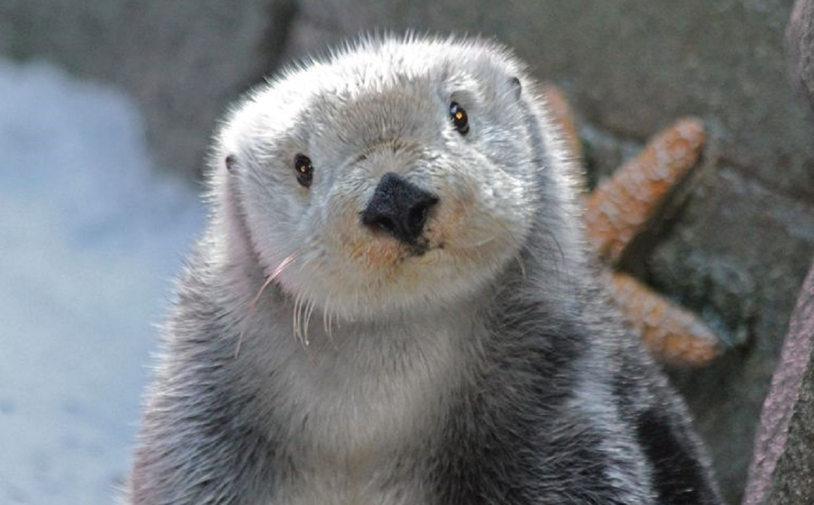
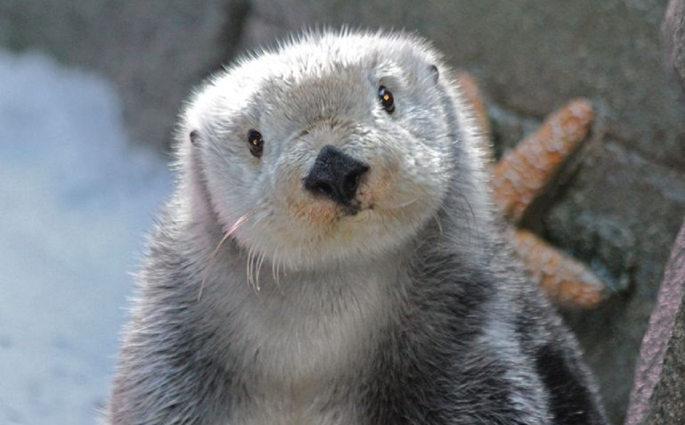

Nuestros Servicios:
Consulta Veterinaria: Nuestro equipo de veterinarios altamente capacitados está aquí para
atender a
tu mascota con amor y cuidado. Desde chequeos de rutina hasta diagnósticos complejos, estamos
comprometidos a proporcionar el mejor cuidado posible.
Cirugía:
Contamos con instalaciones quirúrgicas de vanguardia y un equipo experimentado para
realizar una variedad de procedimientos quirúrgicos con el más alto nivel de atención y
seguridad.
Vacunación y Desparasitación:
Mantén a tu mascota protegida contra enfermedades con nuestros
programas de vacunación personalizados y opciones de desparasitación efectivas.
Cuidado Dental:
La salud dental es crucial para el bienestar general de tu mascota. Ofrecemos
servicios dentales completos, que van desde limpiezas hasta extracciones, para mantener esas
sonrisas brillantes.
Emergencias 24/7:
Sabemos que los problemas de salud pueden surgir en cualquier momento. Por eso,
estamos disponibles las 24 horas del día, los 7 días de la semana, para atender emergencias
veterinarias.
 PetCare
PetCare
 
